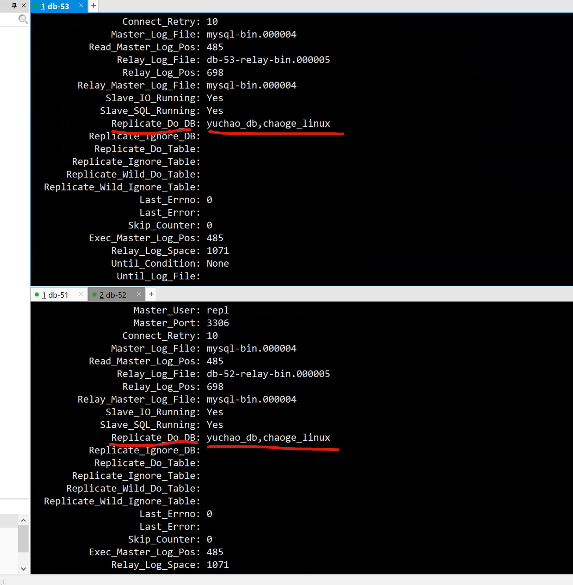
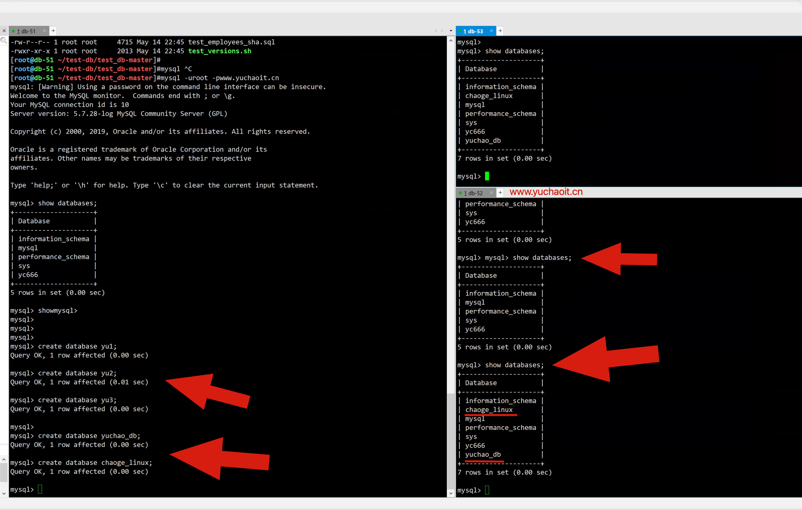
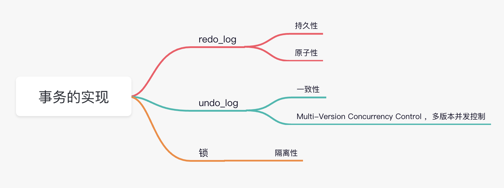
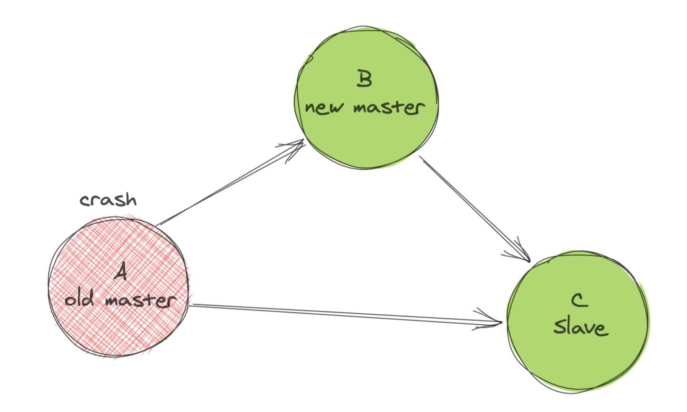
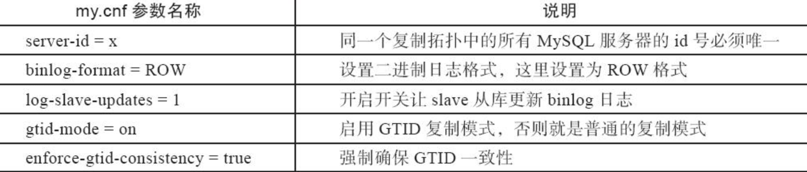
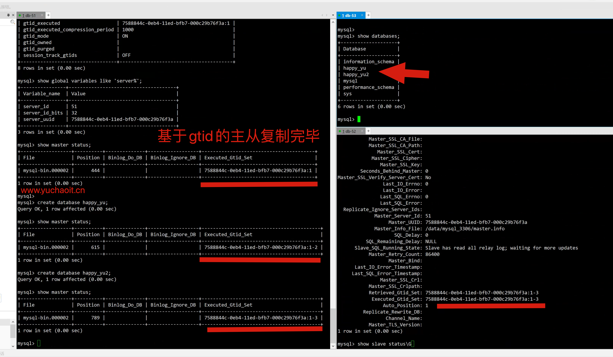

02-10-主从复制高级
过滤复制
1.是什么
当主库上存在多个database，但从库只需要同步一部分的话就需要用到MySQL的复制过滤功能。
比如一个主库承载多个业务数据库，需要将不同业务数据库复制到不同的从库进行查询以做到业务隔离的场景。
通过过滤复制可以灵活的指定哪些库和表需要复制，哪些库不需要同步。
通常建议在从服务器上配置过滤复制，可以减轻主库的负载。
2.怎么配置
主库复制过滤相关配置（仅支持库级别过滤）（建议在从库上配置，这里仅作了解）
· binlog_do_db：白名单，只对指定数据库进行binlog记录与复制，多个数据库设置可以写多行
· binlog_ignore_db：黑名单，此选项中指定的数据库将不进行binlog记录和复制，多个数据库设置可以写多行
[mysqld]
binlog_do_db=yuchao_db
binlog_do_db=chaoge_linux
3.从库修改配置
· replicate_do_db：数据库白名单列表，多个数据库用逗号分隔，该选项指定的数据库会执行主从复制操作
· replicate_ignore_db：数据库黑名单列表，该选项指定的数据库将不会被复制
· replicate_do_table：表级别的白名单
· replicate_ignore_table：表级别的黑名单
· replicate_wild_do_table：可以使用通配符进行指定表，如%代表所有
· replicate_wild_ignore_table：同上
冷配置
# 修改配置文件
replicate_do_db=yuchao_db
replicate_do_db=chaoge_linux
热配置
mysql > stop slave sql_thread;
mysql > change replication filter replicate_do_db=(yuchao_db,chaoge_linux);
mysql > start slave sql_thread;
测试主从过滤复制
# 检查slave状态
show slave status\G
# 主库数据写入


MySQL之GTID复制
mysql事务
为什么数据库需要事务？
- 你表弟向你借500元，你打开APP、爽快的给他转账了，你的卡余额提示少了500
- 你给表弟发了个微信，说，钱打过去了
- 你表弟说：没收到啊哥，你别骗我行吗
- 你钱扣少了，你表弟缺没收到钱，这事办的？咋整
讲道理应该是这样
- 超哥发起转账，转给表弟
- 超哥卡里少了500元
- 表弟卡里多了500元
这三步骤、必然不得出问题，上面的案例，就是这三步发生了问题！
如果有事务、就不会发生这样的事
事务就是
这三件事、三个动作，是一根绳上的蚂蚱，要么都成功，要么都失败
转账要么到表弟账户、要么就转不出去、回到自己卡里
事务的ACID特性
TRANSACTION 事务
Atomicity原子性
原子性强调转账的三个步骤要么成功、要么失败
在一个事务中的所有SQL语句，要么全部执行成功，要么全部失败，即使成功的SQL语句也会被撤销，回到执行之前的状态。
Consistency一致性
一致性是指数据库从一个状态、变为另一个状态
事务开始前、与结束后，数据库的完整性约束没有被破坏。
例如转账，无论成功、或者失败、这500不会多、也不会少
要么超哥卡里扣了500元、表弟多了500元
要么超哥转账失败500元未动、表弟一毛钱也没拿到
这个总和永远是500元，不多也不少
Isolation隔离性
隔离性指的是每个读写事务对其他的事务操作，都是相互隔离不受影响的。
例如同是工商银行
- 超哥转账操作不会影响到小猪佩奇的转账操作
Durability持久性
事务一旦提交后，结果就是永久性生效。
超哥转账500给了表弟，表弟也收到钱了，这件事就结束了，真实生效了。
事务的实现

GTID是什么
从 MySQL 5.6.5 开始新增了一种基于 GTID 的复制方式。
通过 GTID 保证了每个在主库上提交的事务在集群中有一个唯一的ID。
这种方式强化了数据库的主备一致性，故障恢复以及容错能力。
在原来基于二进制日志的复制中，从库需要告知主库要从哪个偏移量进行增量同步，如果指定错误会造成数据的遗漏，从而造成数据的不一致。
借助GTID，在发生主备切换的情况下，MySQL的其它从库可以自动在新主库上找到正确的复制位置，这大大简化了复杂复制拓扑下集群的维护，也减少了人为设置复制位置发生误操作的风险。
另外，基于GTID的复制可以忽略已经执行过的事务，减少了数据发生不一致的风险。
GTID长啥样
GTID (Global Transaction ID) 是对于一个已提交事务的编号，并且是一个全局唯一的编号。
GTID 实际上 是由 UUID+TID 组成的。
其中 UUID 是一个 MySQL 实例的唯一标识。
TID 代表了该实例上已经提交的事务数量，并且随着事务提交单调递增。下面是一个GTID的具体形式：
形式语法
GTID = source_id ：transaction_id
具体结果
2E11FA47-61CA-11E1-9E33-C70AA9429562:28
在上面的定义中，每一个GTID均代表一个数据库的事务，等号右边的source_id表示执行事务的源服务器主库的uuid（也就是server_uuid）
而transaction_id是一个从1开始的自增的序列号，表示在这个主库上执行的第n个事务。
只要保证每台数据库的server_uuid全局唯一，以及每台数据库生成的transaction_id自身唯一，就能保证GTID的全局唯一性。
server_uuid是什么
还记得以前我们在my.cnf中配置了一个参数
server_id=5
并且超哥要求master、slave的server_id必须唯一
为什么换成server_uuid
MySQL 5.6用128位的server_uuid代替了原本32位的server_id的大部分功能。
原因很简单，server_id依赖于my.cnf的手工配置，有可能会产生冲突，而自动产生128位uuid的算法可以保证所有的MySQL uuid都不会发生冲突。
在进行首次启动时，MySQL会自动生成一个server_uuid，并且保存到数据库目录下的auto.cnf文件里，这个文件目前存在的唯一目的就是保存server_uuid。
在MySQL再次启动时其会读取auto.cnf文件，继续使用上次生成的server_uuid。
[root@db-51 ~]#cat /data/mysql_3306/auto.cnf
[auto]
server-uuid=d8710e0b-0da9-11ed-bac3-000c29b76f3a
使用GTID
GTID复制原理流程
- master进行数据更新时、在事务前产生GTID号、一起记录到binlog日志。
- slave的I/O线程将变更的binlog数据，写入到本地中继日志
relay_log - slave的SQL线程从中继日志中获取GTID号，和本地的binlog对比查看是否有记录
- 有记录，说明该GTID事务已执行，slave数据库会忽略
- 如果没有记录，slave数据库从
relay_log中继日志中获取数据，且执行该GTID的事务，记录到binlog中
根据GTID号就可以知道事务最初是在哪个数据库上提交的
有了GTID号、可以方便主从复制的故障切换
主从故障切换
如图、在没有GTID以前，主从复制的故障切换

- master-A宕机，需要将应用程序切换到master-B
- slave-C得和master-B建立新的复制关系
只需要在slave-C上执行新的change master to xxx ，指定master-B即可
问题是，同一个事务、在每台服务器上的binlog名字和位置点、可能都是不一样的
比如执行一条SQL，创建了一个新数据库，执行了一个事务，在master-A机器的binlog中数据位置如下
mysql> show master status
-> ;
+------------------+----------+--------------+------------------+-------------------+
| File | Position | Binlog_Do_DB | Binlog_Ignore_DB | Executed_Gtid_Set |
+------------------+----------+--------------+------------------+-------------------+
| mysql-bin.000003 | 557 | | | |
+------------------+----------+--------------+------------------+-------------------+
1 row in set (0.00 sec)
但是可能在机器master-B中的bin中，同一个SQL执行后，binlog数据位置可能是
mysql> show master status
-> ;
+------------------+----------+--------------+------------------+-------------------+
| File | Position | Binlog_Do_DB | Binlog_Ignore_DB | Executed_Gtid_Set |
+------------------+----------+--------------+------------------+-------------------+
| mysql-bin.000005 | 1251 | | | |
+------------------+----------+--------------+------------------+-------------------+
1 row in set (0.00 sec)
那么这就是一个难题了，如果master-A宕机，需要切换到master-B
slave-C如何知道当前同步的起停数据位置点呢？
master_log_file和master_log_pos填什么？
这就是为什么mysql官方开发了GTID复制方法。
往后，同一个事务的GTID在所有节点上都是一致的，slave-C机器根据GTID就可以知道数据的停止点在哪。
并且，mysql还提供了非常方便的参数
master_auto_position，能够自动的获取GTID值，让运维更加省心了。
GTID优缺点
优点
- 根据GTID可以明确知道事务最开始是在哪个数据库提交的
- GTID对于宕机切换，非常方便，明确数据起止点。
缺点
- 开启了GTID的数据库，和未开启的数据库实例之间、是无法混用复制的
GTID复制实践

环境准备
可以是单机多实例
也可以是多服务器
这里超哥用3台linux虚拟机服务器、初始化安装好mysql
环境清理
pkill mysqld
rm -rf /data/mysql_3306/*
rm -rf /binlog/*
db-51
cat >/etc/my.cnf <<'EOF'
[mysqld]
user=mysql
datadir=/data/mysql_3306
basedir=/opt/mysql/
socket=/tmp/mysql.sock
port=3306
log_error=/var/log/mysql/mysql.err
server_id=51
log_bin=/binlog/mysql-bin
autocommit=0
binlog_format=row
gtid-mode=on
enforce-gtid-consistency=true
log-slave-updates=1
[mysql]
socket=/tmp/mysql.sock
[client]
socket=/tmp/mysql.sock
EOF
db-52
cat > /etc/my.cnf <<EOF
[mysqld]
user=mysql
datadir=/data/mysql_3306
basedir=/opt/mysql/
socket=/tmp/mysql.sock
port=3306
log_error=/var/log/mysql/mysql.err
server_id=52
autocommit=0
gtid-mode=on
enforce-gtid-consistency=true
log-slave-updates=1
[mysql]
socket=/tmp/mysql.sock
[client]
socket=/tmp/mysql.sock
EOF
db-53
cat > /etc/my.cnf <<EOF
[mysqld]
user=mysql
datadir=/data/mysql_3306
basedir=/opt/mysql/
socket=/tmp/mysql.sock
port=3306
log_error=/var/log/mysql/mysql.err
server_id=52
autocommit=0
gtid-mode=on
enforce-gtid-consistency=true
log-slave-updates=1
[mysql]
socket=/tmp/mysql.sock
[client]
socket=/tmp/mysql.sock
EOF
初始化数据
mysqld --initialize-insecure --user=mysql --basedir=/opt/mysql --datadir=/data/mysql_3306/
启动mysql
/etc/init.d/mysqld start
主库、用户创建
grant replication slave on*.* to repl@'10.0.0.%' identified by 'www.yuchaoit.cn';
主库gtid检查
mysql> show global variables like '%gtid%';
+----------------------------------+----------------------------------------+
| Variable_name | Value |
+----------------------------------+----------------------------------------+
| binlog_gtid_simple_recovery | ON |
| enforce_gtid_consistency | ON |
| gtid_executed | 7588844c-0eb4-11ed-bfb7-000c29b76f3a:1 |
| gtid_executed_compression_period | 1000 |
| gtid_mode | ON |
| gtid_owned | |
| gtid_purged | |
| session_track_gtids | OFF |
+----------------------------------+----------------------------------------+
8 rows in set (0.00 sec)
mysql> show global variables like 'server%';
+----------------+--------------------------------------+
| Variable_name | Value |
+----------------+--------------------------------------+
| server_id | 51 |
| server_id_bits | 32 |
| server_uuid | 7588844c-0eb4-11ed-bfb7-000c29b76f3a |
+----------------+--------------------------------------+
3 rows in set (0.00 sec)
mysql> show master status;
+------------------+----------+--------------+------------------+----------------------------------------+
| File | Position | Binlog_Do_DB | Binlog_Ignore_DB | Executed_Gtid_Set |
+------------------+----------+--------------+------------------+----------------------------------------+
| mysql-bin.000002 | 444 | | | 7588844c-0eb4-11ed-bfb7-000c29b76f3a:1 |
+------------------+----------+--------------+------------------+----------------------------------------+
1 row in set (0.00 sec)
从库操作
mysql> show slave status\G
Empty set (0.00 sec)
change master to master_host='10.0.0.51', master_user='repl', master_password='www.yuchaoit.cn' , MASTER_AUTO_POSITION=1;
start slave;
测试主库事务更新
# 写入数据
mysql> show master status;
+------------------+----------+--------------+------------------+----------------------------------------+
| File | Position | Binlog_Do_DB | Binlog_Ignore_DB | Executed_Gtid_Set |
+------------------+----------+--------------+------------------+----------------------------------------+
| mysql-bin.000002 | 444 | | | 7588844c-0eb4-11ed-bfb7-000c29b76f3a:1 |
+------------------+----------+--------------+------------------+----------------------------------------+
1 row in set (0.00 sec)
mysql>
mysql> create database happy_yu;
Query OK, 1 row affected (0.00 sec)
mysql> show master status;
+------------------+----------+--------------+------------------+------------------------------------------+
| File | Position | Binlog_Do_DB | Binlog_Ignore_DB | Executed_Gtid_Set |
+------------------+----------+--------------+------------------+------------------------------------------+
| mysql-bin.000002 | 615 | | | 7588844c-0eb4-11ed-bfb7-000c29b76f3a:1-2 |
+------------------+----------+--------------+------------------+------------------------------------------+
1 row in set (0.00 sec)
mysql> create database happy_yu2;
Query OK, 1 row affected (0.00 sec)
mysql> show master status;
+------------------+----------+--------------+------------------+------------------------------------------+
| File | Position | Binlog_Do_DB | Binlog_Ignore_DB | Executed_Gtid_Set |
+------------------+----------+--------------+------------------+------------------------------------------+
| mysql-bin.000002 | 789 | | | 7588844c-0eb4-11ed-bfb7-000c29b76f3a:1-3 |
+------------------+----------+--------------+------------------+------------------------------------------+
1 row in set (0.00 sec)
mysql> show master status\G
*************************** 1. row ***************************
File: mysql-bin.000002
Position: 789
Binlog_Do_DB:
Binlog_Ignore_DB:
Executed_Gtid_Set: 7588844c-0eb4-11ed-bfb7-000c29b76f3a:1-3
1 row in set (0.00 sec)
基于gtid的主从复制结果
